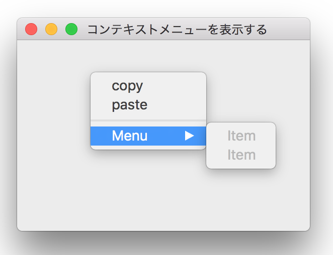
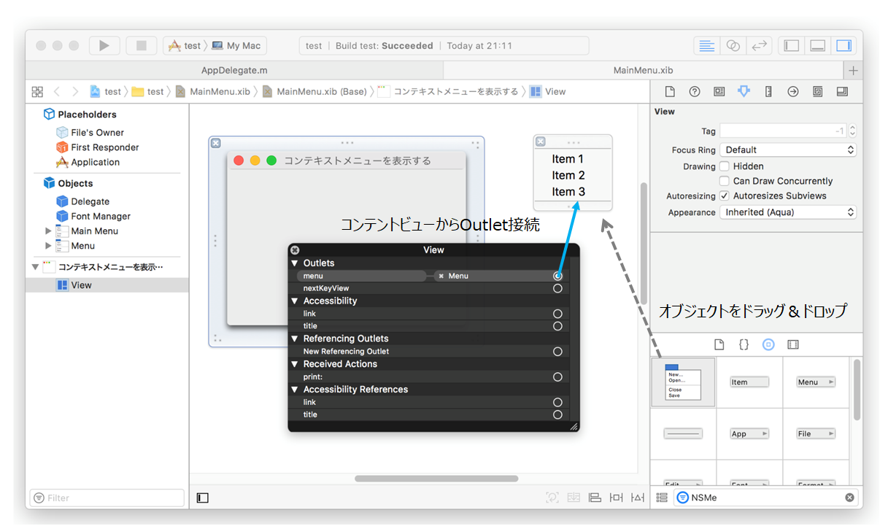
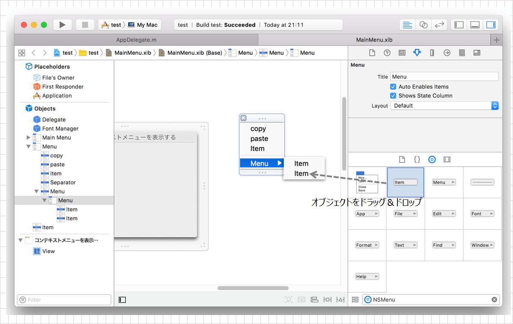
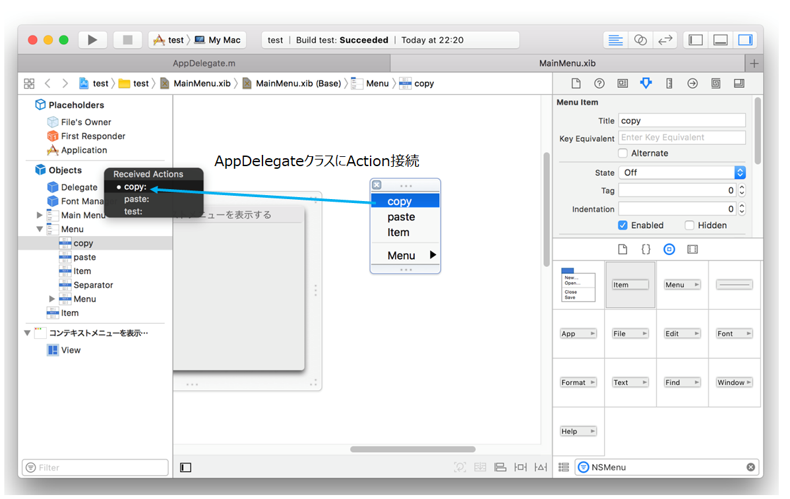
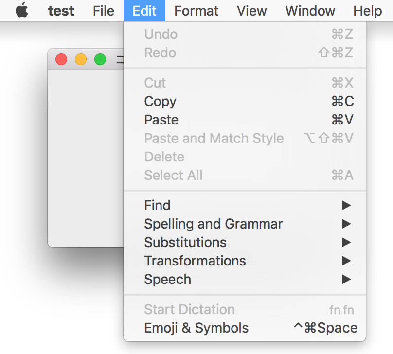

コンテキストメニューを表示する
ビューの上でマウスを右クリックしてコンテキストメニューを表示する。メニューをクリックすると対応するメソッドが起動する。

Interface Builder
1. メニューの作成
コンテキストメニューを作成し、ビューと接続する。
MainMenu.xibをインタフェースビルダーで開き、オブジェクトライブラリからメニュー（NSMenuクラス）を選択し、エディタエリアの余白に追加する。
メニューを表示するビューの上にカーソルを合わせ、右クリックでビューのOutlet一覧を表示する。menuプロパティをメニューオブジェクトまでドラッグして両者を接続する。

これにより、ビューはコンテキストメニューを表示しイベントの受付けたり、メニューに対する操作が可能となる。
なお、プログラムからメニュー要素の有効/無効を可能にするには、メニューの属性「Auto Enables Items」をオフにする。
2. メニュー要素の定義
メニューにメニュー要素（NSMenuItemクラス）を追加し、名前をつけ、必要ならショートカットキーを定義する。

初期状態では、メニューオブジェクトには３個の要素が定義されている。要素を削除するときは、要素を選択してdeleteキーを実行。要素を追加するときは、object LiblaryからMenu Itemオブジェクトを選択し、メニューオブジェクトの追加したい位置にドラッグする。
メニューの要素としてメニューを追加するときは、Submenu Menu Itemオブジェクトを追加する。これでメニューを階層化することができる。
3. アクションの接続
メニューのアクションをアクションを実装しているクラスに接続する。
例では、"copy", "paste"メニューを定義し、メニュー対応するメソッドをAppDelegateクラスに実装する。インタフェースビルダのメニューオブジェクトのcopyメニューから、AppDelegateクラスのcopy:メソッドに対して右クリックのドラッグ（アクション接続）を行う。

AppDelegateクラス（Xcode）
以上で、コンテキストメニューの実装は完了。コンテキストメニューを選ぶと対応するメソッドが実行される。
補足
メニュー要素の有効/無効
アクションメソッドが実装され接続された時点でメニュー項目は有効（選択可能）となる。それまでは無効（グレーアウト）である。
メインメニューのデフォルトの動作
メインメニューは、アプリケーションを起動したときディスプレイの上部に表示されるメニューバーのこと。ウィンドウアプリケーションを作成するとデフォルトでメインメニューが作成される。"File", "Edit", "Format" など。

アクションのデフォルトの接続先はファーストレスポンダである。例題のケースで、メインメニューのEdit→copyを実行すると、レスポンダーチェーンの探索の結果、AppDdelegateクラスに実装（オーバーライド）されたcopyメソッドが見つかるので、それが実行される。